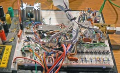
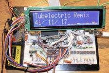
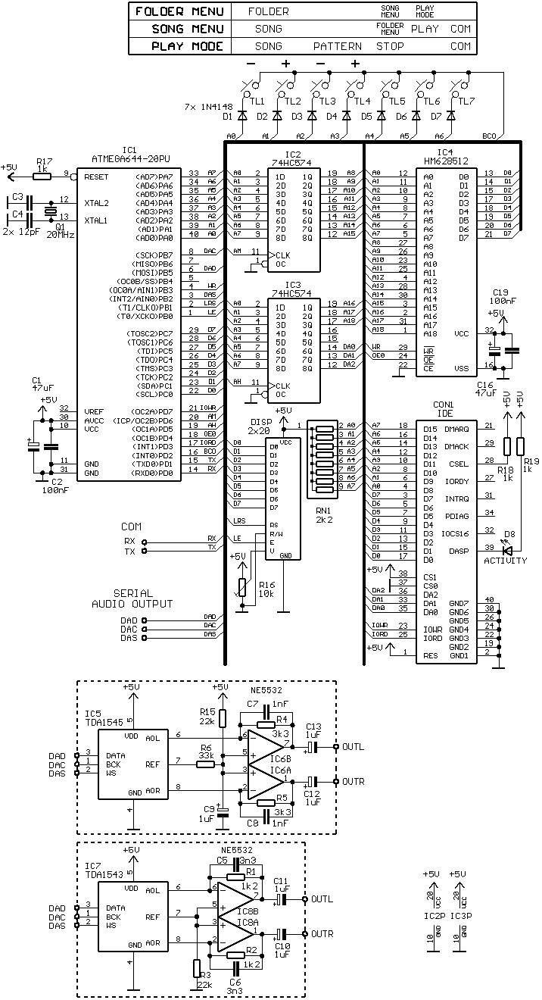

Po celkem úspìšném pøepracování pùvodního MOD-playeru je sice moné bez problému pøehrávat vícekanálové trackery, ale tìch kvalitních ve formátu MOD bohuel zrovna moc k dispozici není a pøevést do tohoto formátu novìjší formáty lze jen zøídka. Z toho dùvodu jsem si øekl, e by nebylo od vìci pøepracovat loader pøehrávaèe tak, aby byl schopen pøehrát i S3M, které mají velmi podobnou strukturu. Bohuel si pánové od Future Crew (autoøi formátu ScreamTracker 3) øekli, e je dobrı nápad uloit vzorky ve neznaménkovém formátu, co je pøesnì naopak, ne u ProTrackeru. Pøevádìt vzorky v reálném èase znamená instrukci navíc (a k tomu nìjaké rozhodování MOD/S3M), take do toho se mi moc nechtìlo a pøevést vzorky dopøedu by spolklo pøes 1s/1MB a to se mi rovnì nelíbí (nesnáším pøístroje s odezvou delší, ne tak 100ms). Navíc je pùvodní hlavièka pomìrnì dost HW specifická, take jsem se rozhodl pro monost tøetí a sice napsat prográmek, kterı samply konvertuje do potøebného formátu a zároveò, kdy u to musí bıt, pøevıká ponìkud nestravitelnou S3M hlavièku do nìèeho velmi podobného MODùm. To mi velmi usnadnilo jejich naèítání, protoe jsem nemusel nijak extra zasahovat do pùvodního loaderu. Vyslednı formát, kterı jsem pracovnì nazval MD3 (ModTracker 3) kombinuje jednoduchost ProTrackeru s vıhodami ScreamTrackeru 3 (stereováha, komprese "notového zápisu", delší vzorky, ...).

|
 |  |
{kind=link}
{kind=link}
| Mixing: | 16-bit mono/stereo |
| Vzorkování: | 4 - 48kHz (teoreticky i víc) |
| Resampling: | ádnı nebo lineární interpolace |
| Max. kanálù: | 4 pøi 35kHz vzorkování |
| 8 pøi 21kHz vzorkování | |
| 10 pøi 17kHz vzorkování | |
| Zdroj dat: | HDD nebo CF karta s FAT16 (základní podpora adresáøù) |
| nebo sériovı port | |
| Formáty: | Nekomprimovanı ProTracker (*.MOD) Upravenı ScreamTracker 3 (*.S3M) |
Všechny hodnoty platí pro AVR taktované na 20MHz, nicménì pouitı ATmega644 lze znaènì pøetaktovat.
Na zapojení se oproti minulé verzi moc nezmìnilo. Jen analogovı mixing kanálù pomocí rezistorù byl nahrazen digitálním (kvùli stereováze, která je u S3M dost vyuívána), take byly odstranìny.
|  |
K vlastnímu zapojení opìt jen struènì: Jádrem zapojení je celkem vıkonnı MCU AVR ATmega644-20PU na 20MHz. Disponuje slušnım mnostvím FLASH (64KB) i RAM (4kB). Externí SRAM IC4 je kvùli kapacitì adresovaná SW, pomocí dvou rozšiøujících 8-bit bufferù IC2 a IC3. Zabírá to pouze dva porty (porta: adresy, portc: data) a pár øídících signálù. Pamì by mìla bıt sviná (v mém pøípadì to chodí na 55ns verzi). Na tìchto portech je nadrátováno také IDE rozhraní v 16-bit módu. Jeho adresace je øešena pøes zbytek bufferu IC3. Zde bych upozornil, e LED D8 je obèas nezbytná - nìkteré HDD bez ní odmítají komunikovat (CF moná taky). Na stejnıch portech je navíc ještì HD44780 LCD a tlaèítka. Audio vıstup je kvùli kvalitì zvuku 16-bit a to sériovı pøes SPI rozhraní. MCU na SPI rozhraní emuluje I2S sbìrnici (nebo obdobu pro TDA1545 pøevodník). Více k tomuto audio vıstupu zde.
Pouitı MCU samozøejmì chodí minimálnì na 20MHz, ale pøi experimentování jsem zkoušel trochu pøitlaèit. 24MHz nebyl problém, co mì docela pøekvapilo. Mùj prastarı ATmega32 se zaèal pochybnì chovat u nad 18MHz, kdy program fungoval, ale jen kdy byl zarovnán od sudé adresy FLASH ;-). Tak jsem zkusil 27MHz a kupodivu stále bez problému. Vìtší krystal jsem nenašel, tak jsem ze stolních usazenin vyhrabal 32MHz oscilátor a po pár wait-cyklech navíc pro SRAM a IDE to kupodivu chodí bez obtíí. To se hodí zvláš pro vícekanálové MODy. Nevím jestli je to náhoda nebo takhle chodí všechny novìjší ATmega644, take pokud to nìkdo zkoušel a má podobnou zkušenost, pøípadnì odhalil nìjakou skrytou nefunkènost, nech se ozve, docela by mì to zajímalo (mùj kus je typ -20PU, série 0617). Jinak na 6V1 to jelo i na 40MHz, ale to u se nelíbilo ostatním komponentám ;-).
Program je opìt kompletnì v ASM, ale tentokrát jsem ho
peèlivì dìlil do nìkolika souborù, take u to není jedna 10k+ øádkù dlouhá nudle jako jiné moje "produkty".
Navíc jsem hojnì vyuíval makra a komentoval, take by kód mìl bıt docela èitelnı.
Skladbu lze, podobnì jako u minulé verze, nahrát pøes sériovı port bez øízení toku
nebo naèíst z HDD nebo CF karty se souborovım systémem FAT16. V menu je podporována
jedna úroveò adresáøù, kterıch mùe bıt maximálnì 255, stejnì jako skladeb.
Pro pøehlednost jsem pøidal øazení podle názvu.
Zdrojáky a pøeklad pro TDA1543,
zdrojáky a pøeklad pro TDA1545.
Ovládání by mìlo bıt zøejmé ze schématu. V zásadì to chodí tak, e je nejøív otestována externí SRAM. Pokud je jí alespoò 64KB, tak je vše OK a pokud ne, tak program zámìrnì zatuhne.
Dále je testováno IDE zaøízení. Pokud tam je a má správnı formát (FAT16), tak pøehrávaè vstoupí do menu adresáøù. Odtud se lze dostat buïto do menu skladeb v adresáøi nebo pøímo do pøehrávacího módu. Pokud nìco nesedí, tak pøejde pøehrávaè do reimu, kde tahá data pouze z USARTu.
Naètení dat z USARTu lze také spustit tlaèítkem COM. Sosání dat z USARTu je ukonèeno, kdy 1,5s nic nepøíjde - data lze poslat libovolnım terminálem, není pouita parita ani øízení toku, MCU to stíhá bez problému.
Nepodporované skladby by mìl pøehrávaè pøeskoèit, ale není to vdy zaruèeno, protoe se netestuje kompletní soubor, ale jen pár hlavních poloek hlavièky.
Na zaèátku hlavního modulu "m644_modplay.asm" je vìtšina nastavení pro celı pøehrávaè. Struènı popis vıznamu poloek uvádí tabulka.
| Název parametru | Vıznam |
|---|---|
| XTAL | Frekvence hodin |
| HCOC | Pøidá wait-cyklus navíc do SRAM komunikace (obvykle nutné nad 24MHz) |
| USRDIV | Dìlièka pro USART, baud=XTAL/(16*(USRDIV+1)) |
| MEMTST | Zapne kompletní test SRAM (trvá to asi 1s/1MB/20MHz), vhodné pøi oivování |
| STORA | Zapne IDE interface, jinak pouze naèítání pøes sériák |
| LCDON | Zapne LCD interface. |
| LING | Jazyk textu na LCD. |
| MAXCH | Maximální podporovanı poèet kanálù, minimálnì 4, maximálnì a 32, ale vezme si to hodnì RAM, take bude tøeba zmenšit audio FIFO buffer (defaultnì 16) |
| MAXINS | Maximální podporovanı poèet nástrojù trackeru, standardnì 48, lze ubrat i pøidat, ale vezme si to nìjakou to RAM navíc |
| DAC | Typ audio sbìrnice, 1543=I2S, 1545=TDA1545 |
| SRATE | Poadovaná vzorkovací frekvence (od 4 do asi 48kHz, moná víc) |
| STEREO | Zapne stereo mixing, jinak jsou oba kanály shodné |
| LINRES | Zapne lineární interpolaci pøi resamplingu (bere nìjakı ten vıkon MCU navíc) |
| MAMPLD | Urèuje amplitudu kanálu ve vısledném mixu, pro 4 kanály by mìla bıt hodnota 1, pro vícekanálové 0 (sníená amplituda) |
| DRAWVU | Zapne VU-metry na LCD (bere asi 5% vıkonu MCU) |
Další nastavení jsou roztrušena po celém zdrojáku, ale do tìch obvykle není nutné vrtat. Jediné, co stojí za zmíòku, je velikost audio FIFO. Tento buffer by mìl bıt co nejvìtší - pokud bude pøehrávaè provozován s malım poètem kanálù (MAXCH), pak se uvolní nìjaká ta RAM a je ho moné prodlouit. Nemùe ale bıt kratší ne 1kB, protoe je sdílen modulem "storage.asm" jako datovı buffer.
Vzhledem k frekvenci oscilátoru by mìl bıt naprogramovan fuse-bit CKOPT (amplituda oscilátoru). To je obèas nezbytné kvùli blízkosti pinù USARTu, kterı dost ruší. Dál by mìl bıt vypnutı JTAG, protoe jinak patøièná èást portc nemá tvrdou log.1 a nábìná hrana dat je pak dlouhá - chyby pøi zápisu. Moná by to šlo poøešit i zvedacími rezistory, ale nezkoušel jsem.
Dokáe pøehrát nekomprimované MODy, teoreticky s libovolnım poètem kanálù
(pochopitlenì pøi adekvátnì nízkém vzorkování).
Dále dovede pøehrát upravené S3M. K tomu úèelu slouí prográmek "S3M convertor". Ten by mìl
bıt schopen naèíst libovolnou ScreamTracker 3 skladbu a pøevést ji do mého vlastního formátu ModTracker 3 (MD3).
Samotná pøevodní utilitka "s3m2md3.exe" je samozøejmì konzolovka, ale pro pohodlí jsem k ní dodìlal prográmek s grafickım rozhraním
umoòující celkem snadné pøevedení vìtšího mnoství souborù najednou.
Utilitka ke staení: S3M_2_MD3_convertor.zip (462kB).
| Podporované efekty MOD | ||
|---|---|---|
| # | Název efektu | Stav implementace |
| 0 | Arpeggio | funkèní |
| 1 | Portamento up | funkèní |
| 2 | Portamento down | funkèní |
| 3 | Tone-portamento | funkèní |
| 4 | Vibrato | funkèní, pouze sinus |
| 5 | Tone-portamneto + Volume slide | funkèní |
| 6 | Vibrato + Volume slide | funkèní |
| 7 | Tremolo | funkèní |
| 8 | Panning (stereováha) | funkèní |
| 9 | Nastevení ofsetu vzorku | funkèní |
| A | Volume slide | funkèní |
| B | Skok na jinı list | pouze vpøed |
| C | Nastav hlasitost | funkèní |
| D | Skok v listu | funkèní |
| E0 | Nastav filtr | není |
| E1 | Portamento up jemnì | funkèní |
| E2 | Portamento down jemnì | funkèní |
| E3 | Glissandro | není a nebude, nepouívá se |
| E4 | Vibrato waveform | není |
| E5 | Fine-tune | není |
| E6 | Pattern loop | není |
| E7 | Tremolo waveform | není |
| E9 | Retrig note | funkèní |
| EA | Volume slide up jemnì | funkèní |
| EB | Volume slide down jemnì | funkèní |
| EC | Cut note | funkèní |
| ED | Note delay | funkèní |
| EE | Pattern delay | není |
| EF | Invert loop | není |
| F | Set speed/tempo | funkèní |
| Podporované efekty S3M | ||
|---|---|---|
| # | Název efektu | Stav implementace |
| A | Set speed | funkèní |
| B | Position jump | funkèní |
| C | Pattern break | funkèní |
| D | Volume slide/td> | funkèní |
| E | Portamento down | funkèní, extra-fine mód jen pøiblinì |
| F | Portamento up | funkèní, extra-fine mód jen pøiblinì |
| G | Tone-portamento | funkèní |
| H | Vibrato | funkèní |
| I | Tremor | není |
| J | Arpeggio | funkèní |
| K | Vibrato + volume slide | funkèní |
| L | Tone-portamento + volume slide | funkèní |
| M | Set channel volume | není |
| N | Channel volume slide | není |
| O | Set sample offset | funkèní |
| P | Panning slide | není |
| Q | Retrigger | funkèní |
| R | Tremolo | funkèní |
| S1 | Glissando | není |
| S2 | Set fine-tune | není |
| S3 | Set vibrato waveform | není (jen sinus) |
| S4 | Set tremolo waveform | není (jen sinus) |
| S5 | Set panbrello waveform | není |
| S6 | Pattern delay | není |
| S7 | Set new note action | není |
| S8 | Panning | funkèní |
| S9 | Extended channel effects | není |
| SA | Set sample offset high | není |
| SB | Pattern loop | není |
| SC | Note cut | funkèní |
| SD | Note delay | funkèní |
| SE | Pattern delay | není |
| SF | Select active macro | není |
| T | Set tempo | funkèní |
| U | Fine vibrato | funkèní |
| V | Set global volume | není |
| W | Global volume slide | není |
| X | Set panning | funkèní |
| Y | Panbrello | není |
Efekty jsem se snail odladit tak, aby se chovaly identicky s MP trackerem take by to mìlo znít stejnì. Pokud najdete nìjakı MOD, kterı by se vıraznìji lišil, tak mi ho pošlete abych mohl poladit algoritmus.
Pár dokumentací ProTrackeru a ScreamTrackeru 3 ke staení uvádí následující tabulka:
| Dokumentace | Popis |
|---|---|
| FH-MFDL2.ZIP | Pùvodní dokumentace, hrubı popis vìtšiny formátù |
| MOD-FORM.TXT | Kvalitní dokumentace z nìjaké mid2mod utilitky |
| MODFILXX.TXT | Rovnì kvalitní dokumentace z MOD playeru TNT MP11 |
Nejlepší "dokumentace" jsou ale zdrojáky programu MP tracker. Vlastní dekodér je sice napsán naprosto pøíšernì, navíc je to pøevzat z nìjakıch prehistorickıch pøehrávaèù (a upraven do C++), ale stále je to nejsnaší cesta, jak pochopit funkci a chování efektù.
V následujícím videu je pøehráno pár vícekanálovıch S3M:
| Last update: 22.10.2011 |  |